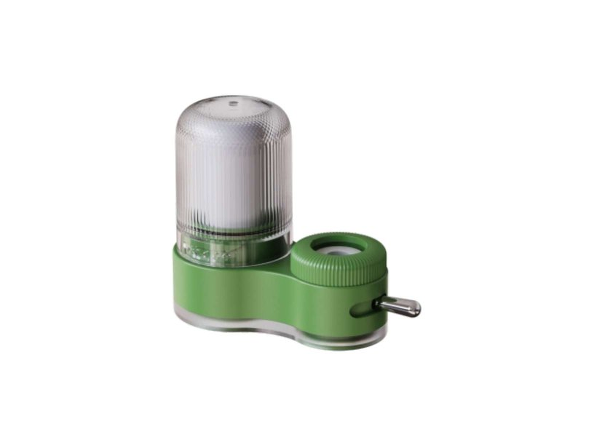

الصنبور
الصنبورRP-F01
فلتر صنبور كلاسيكي
SKU: RP-F01
MOQ: يُؤكَّد عند الاستفسار
الرئيسية/المنتجات/فلاتر الصنبور/ RP-F10

فلاتر الصنبور
فلتر ماء مثبت على الصنبور (JK-B1) — مدمج ومنفصل
RP-F10 (مدمج) وRP-F11 (منفصل) موديلان في عائلة فلتر الماء المثبت على الصنبور نفسها، ويشتركان في خرطوشة الفلتر نفسها. المواصفة الرئيسية: الشكل فلتر صنبور مدمج أو منفصل. تُؤكد المواصفات لكل موديل وطلب.
خيارات التركيب والتشطيب مؤكدة حسب الطلب.
الجهد / التردد قابل للتكوين حسب بلد الوجهة. تُؤكد التكوينات الأخرى لكل طلب.
RP-F10 هو فلتر ماء مثبت على الصنبور (JK-B1) بشكلين مدمج ومنفصل. RP-F10 (مدمج) وRP-F11 (منفصل) موديلان في العائلة نفسها ويشتركان في خرطوشة الفلتر نفسها، مع ترشيح بسبع مراحل واختيار الماء الخام / المفلتر في كليهما. ويأتي RP-F10 بغطاء أزرق داكن أو أخضر؛ والغطاء الأخضر هو خيار غطاء للفلتر نفسه، بنفس مواصفات النسخة الزرقاء الداكنة. خيارات الخرطوشة والتدفق الاسمي والسعة ودقة الترشيح والضغط ودرجة الحرارة، وعمر الخرطوشة والأبعاد مؤكدة حسب الطلب.
ما الحد الأدنى لكمية الطلب؟
الطلب الأول 200 وحدة لكل موديل، وإعادة الطلب 500 وحدة.
هل يمكنني طلب عينة قبل طلب بالجملة؟
نعم. العينات جاهزة خلال 15 يومًا، وتُسترد رسوم العينة عند أول طلب بالجملة. تستغرق الطلبات بالجملة 40 يومًا بعد اعتماد العينة وتُشحن FOB Shenzhen.
أي متغير يجب أن أختار؟
اطلب باسم RP-F10 وحدد الغطاء (أزرق داكن أو أخضر). RP-F11 هو النسخة المنفصلة من خرطوشة الفلتر نفسها، مع محول منفصل.
لونان للغطاء لـ RP-F10 — اطلب باسم RP-F10 وحدد الغطاء (أزرق داكن أو أخضر)؛ RP-F11 هو النسخة المنفصلة.
مرّر فوق صورة متغير لرؤية مواصفاته. على الشاشات اللمسية، انقر على صورة.


مواصفات كاملة لكل طراز، جنباً إلى جنب. جدول المواصفات أدناه يعرض قيم RP-F10.
| المواصفة | RP-F10-1 — غطاء أزرق داكن (JK-B1) | RP-F10-2 — غطاء أخضر (JK-B2) | RP-F10-3 — منفصل (JK-A1) |
|---|---|---|---|
| الشكل | فلتر صنبور مدمج | فلتر صنبور مدمج | فلتر صنبور منفصل |
| خيارات الخرطوشة | يُؤكد حسب الطلب | يُؤكد حسب الطلب | يُؤكد حسب الطلب |
| مخرج | اختيار الماء الخام / الماء المفلتر | اختيار الماء الخام / الماء المفلتر | اختيار الماء الخام / الماء المفلتر |
| التدفق الاسمي / السعة | يُؤكد حسب الطلب | يُؤكد حسب الطلب | يُؤكد حسب الطلب |
| دقة الترشيح | يُؤكد حسب الطلب | يُؤكد حسب الطلب | يُؤكد حسب الطلب |
| الضغط / درجة الحرارة | يُؤكد حسب الطلب | يُؤكد حسب الطلب | يُؤكد حسب الطلب |
| عمر الخرطوشة / الأبعاد | يُؤكد حسب الطلب | يُؤكد حسب الطلب | يُؤكد حسب الطلب |
| الترشيح | ترشيح من 7 مراحل | ترشيح من 7 مراحل | ترشيح من 7 مراحل |
| غطاء | أزرق داكن | أخضر | — |
7 صفوف مواصفات من كتالوج ROPureOEM.
| الشكل | فلتر صنبور مدمج |
|---|---|
| خيارات الخرطوشة | يُؤكد حسب الطلب |
| مخرج | اختيار الماء الخام / الماء المفلتر |
| التدفق الاسمي / السعة | يُؤكد حسب الطلب |
| دقة الترشيح | يُؤكد حسب الطلب |
| الضغط / درجة الحرارة | يُؤكد حسب الطلب |
| عمر الخرطوشة / الأبعاد | يُؤكد حسب الطلب |
المواصفات مأخوذة من كتالوج ROPureOEM. وعندما لا تكون القيمة مؤكدة بعد، تُدرج على أنها «مؤكدة لكل طلب» — ونحن لا ننشر أرقامًا غير مؤكدة.
الصنبورفلتر صنبور كلاسيكي
SKU: RP-F01
MOQ: يُؤكَّد عند الاستفسار
 الصنبور
الصنبورفلتر صنبور قابل للدوران 360°
SKU: RP-F02
MOQ: يُؤكَّد عند الاستفسار
 الصنبور
الصنبورفلتر صنبور من ألياف الكربون
SKU: RP-F06
MOQ: يُؤكَّد عند الاستفسار
 الصنبور
الصنبورفلتر صنبور بشاشة عرض عمر الفلتر
SKU: RP-F08
MOQ: يُؤكَّد عند الاستفسار